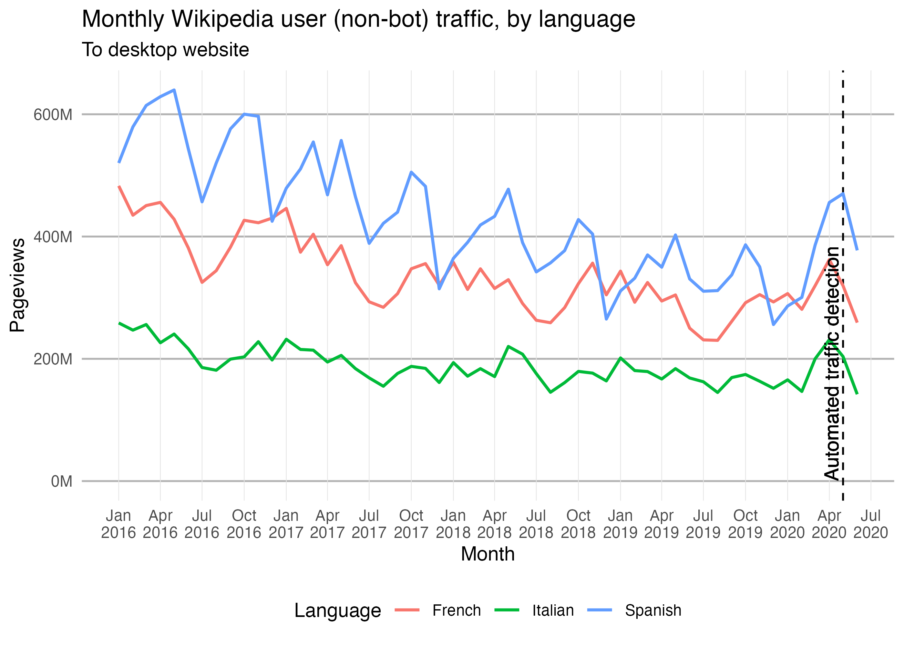
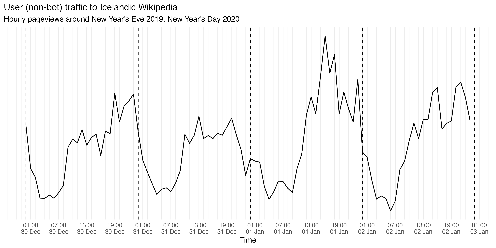
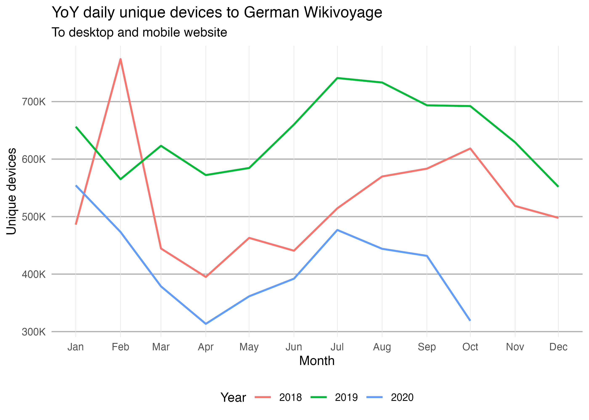
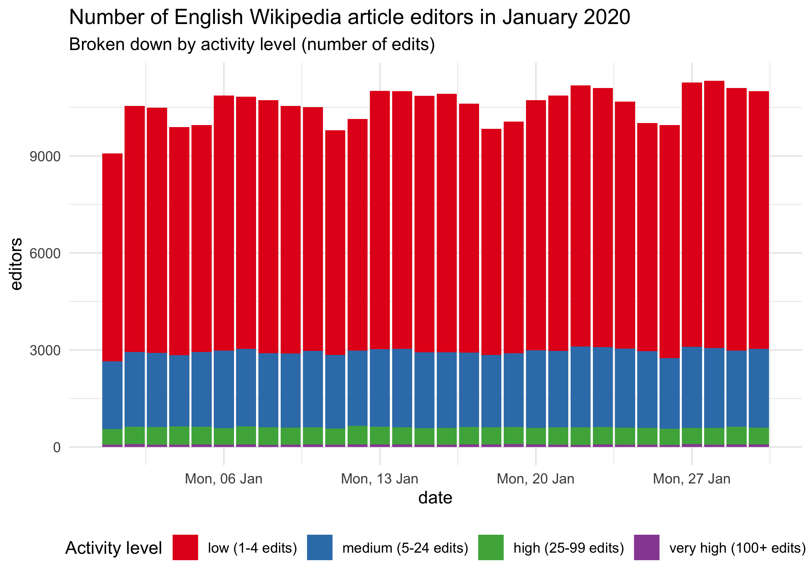
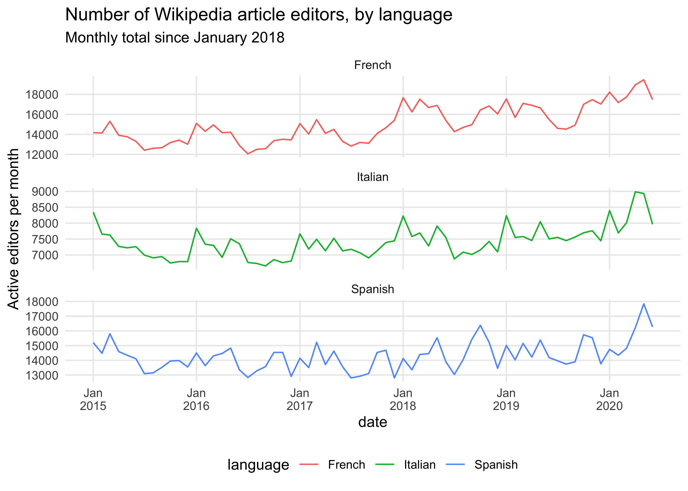
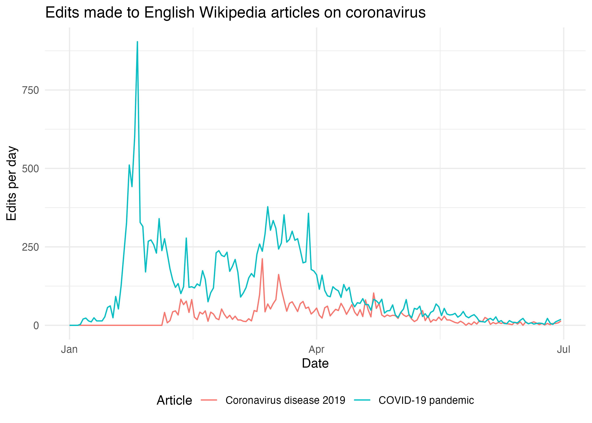
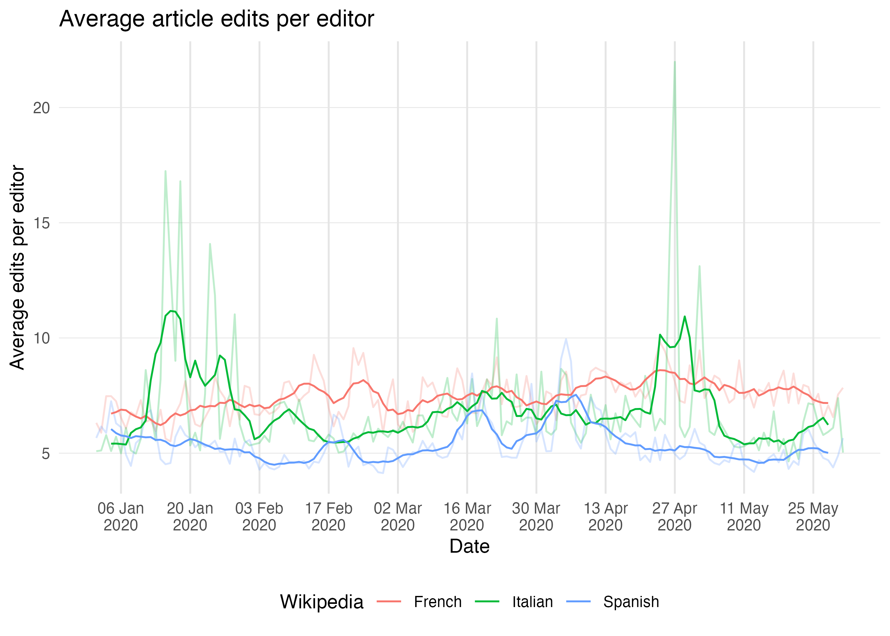

{waxer} makes the Wikimedia Analytics Query Service (AQS) REST API available and easy to use in R. With a consistent interface and output, {waxer} facilitates working with metrics & data available in AQS, especially when combined with modern data science frameworks like tidyverse for data wrangling.
Brief explanation of packages used: {purrr} makes it very easy to run multiple {waxer} queries programmatically, {dplyr} makes it easy to manipulate the obtained data, {lubridate} aids working with dates & times, and we use {ggplot2} for visualization. In some of these examples we will use purrr::map to apply a {waxer} function to a set of values we’re interested in while keeping all the other parameters constant. Here’s how map works:
fun <- function(a, b) { return(a + b) } map(-1:1, fun, b = 2) #> [[1]] #> [1] 1 #> #> [[2]] #> [1] 2 #> #> [[3]] #> [1] 3
Notice that the output is a list, which is map’s default behavior. We can also specify the output type by using the different flavors of map:
map_dbl(-1:1, fun, b = 2) #> [1] 1 2 3 map_chr(-1:1, fun, b = 2) #> [1] "1.000000" "2.000000" "3.000000"
Since the output of {waxer}’s API-querying functions is always a tibble (an extension of a data.frame), we will mostly be using the map_dfr function which stitches several tibbles into one (via dplyr::bind_rows).
Traffic-based data and metrics
Pageviews
This package uses the same API endpoint as the {pageviews} package for page view data. Similar to {pageviews}, the caveat is that the traffic data is only available from 1 August 2015. For legacy view counts, refer to {wikipediatrend} package.
In this example we retrieve the page-views for the New Year’s Eve and New Year’s Day articles on English Wikipedia. Specifically, we’re interested in user traffic, which excludes known spiders/bots.
pageviews <- wx_page_views( project = "en.wikipedia", page_name = c("New Year's Eve", "New Year's Day"), access_method = "all", agent_type = "user", start_date = "20191231", end_date = "20200101" )
pageviews #> # A tibble: 4 x 4 #> project page_name date views #> <chr> <chr> <date> <int> #> 1 en.wikipedia New Year's Day 2019-12-31 59657 #> 2 en.wikipedia New Year's Day 2020-01-01 277191 #> 3 en.wikipedia New Year's Eve 2019-12-31 200158 #> 4 en.wikipedia New Year's Eve 2020-01-01 50580
In this case, the New Year’s Eve article was viewed much more on New Year’s Eve (December 31st) than on New Year’s Day. Similarly, the New Year’s Day article was viewed much more on New Year’s Day (January 1st) than on New Year’s Eve.
Work smarter, not harder
Now, suppose we wanted to see if this pattern is consistent across the years (starting with 2015/2016, since the API for pageviews starts from 2015-08-01). One way to do this would be to create start_date-end_date pairs across the years and use map2_dfr (not map_dfr) to iterate through the pairs:
new_years_dates <- tibble( start_date = as.Date("2015-12-31") + years(0:4), end_date = as.Date("2016-01-01") + years(0:4) ) new_years_dates #> # A tibble: 5 x 2 #> start_date end_date #> <date> <date> #> 1 2015-12-31 2016-01-01 #> 2 2016-12-31 2017-01-01 #> 3 2017-12-31 2018-01-01 #> 4 2018-12-31 2019-01-01 #> 5 2019-12-31 2020-01-01
Notice that those are Dates, not “YYYYMMDD” strings. All of the start_date and end_date parameters in {waxer}’s functions accept either. This way we don’t have to use as.Date when we’re querying once and don’t have to use as.character on dates in situations like this.
new_years_views <- map2_dfr( new_years_dates$start_date, new_years_dates$end_date, wx_page_views, project = "en.wikipedia", page_name = c("New Year's Eve", "New Year's Day"), access_method = "all", agent_type = "user", granularity = "daily", .id = "pair" )
head(new_years_views) #> # A tibble: 6 x 5 #> pair project page_name date views #> <chr> <chr> <chr> <date> <int> #> 1 1 en.wikipedia New Year's Day 2015-12-31 27956 #> 2 1 en.wikipedia New Year's Day 2016-01-01 32791 #> 3 1 en.wikipedia New Year's Eve 2015-12-31 186715 #> 4 1 en.wikipedia New Year's Eve 2016-01-01 58238 #> 5 2 en.wikipedia New Year's Day 2016-12-31 64817 #> 6 2 en.wikipedia New Year's Day 2017-01-01 37383
new_years_views <- new_years_views %>% mutate( pair = factor( new_years_views$pair, 1:5, paste(2015:2019, 2016:2020, sep = "/") ), day = case_when( month(date) == 12 & mday(date) == 31 ~ "Eve", month(date) == 1 & mday(date) == 1 ~ "Day" ), day = factor(day, c("Eve", "Day")) ) head(new_years_views) #> # A tibble: 6 x 6 #> pair project page_name date views day #> <fct> <chr> <chr> <date> <int> <fct> #> 1 2015/2016 en.wikipedia New Year's Day 2015-12-31 27956 Eve #> 2 2015/2016 en.wikipedia New Year's Day 2016-01-01 32791 Day #> 3 2015/2016 en.wikipedia New Year's Eve 2015-12-31 186715 Eve #> 4 2015/2016 en.wikipedia New Year's Eve 2016-01-01 58238 Day #> 5 2016/2017 en.wikipedia New Year's Day 2016-12-31 64817 Eve #> 6 2016/2017 en.wikipedia New Year's Day 2017-01-01 37383 Day ggplot(new_years_views, aes(x = day, y = views)) + geom_line(aes(color = page_name, group = page_name), size = 1) + scale_y_continuous( minor_breaks = NULL, labels = scales::label_number(scale = 1e-3, suffix = "K") ) + facet_wrap(~ pair, nrow = 1) + labs( title = "User (non-bot) traffic to New Year's Eve/Day articles", color = "Article", x = "New Year's", y = "Pageviews" ) + theme_bw() + theme(legend.position = "bottom")

Including redirects
MediaWiki enables users to create redirects. This is usually done for common typos and aliases, to make it easier for users (both readers and editors) to arrive at a single article. The thing is, when someone visits a redirect page, that page view is not counted towards the total view count for the destination page. To include redirects in the output for wx_page_views:
pvs_with_redirects <- wx_page_views( "en.wikipedia", c("COVID-19 pandemic", "2019–20 coronavirus pandemic"), start_date = "20200401", end_date = "20200401", include_redirects = TRUE )
Caution: this process requires finding all the redirects (within the article namespace) to the requested pages and retrieving those redirects’ page views. This has a considerable impact on the speed with which page views are retrieved. However, the function is optimized to work with many pages and will query the MediaWiki API the fewest times it can (since the redirects API supports up to 50 titles per query). Other than that the same rate limits apply.
head(pvs_with_redirects) #> # A tibble: 6 x 5 #> project page_name redirect_name date views #> <chr> <chr> <chr> <date> <int> #> 1 en.wikiped… 2019–20 coronavirus … <NA> 2020-04-01 810193 #> 2 en.wikiped… COVID-19 pandemic <NA> 2020-04-01 371 #> 3 en.wikiped… COVID-19 pandemic 2019-2020 China pneumonia… 2020-04-01 29 #> 4 en.wikiped… COVID-19 pandemic 2019-20 China pneumonia o… 2020-04-01 16 #> 5 en.wikiped… COVID-19 pandemic China pneumonia outbreak 2020-04-01 4 #> 6 en.wikiped… COVID-19 pandemic 2019–20 China pneumonia o… 2020-04-01 153
On 1 April 2020, the 2019–20 coronavirus pandemic article had 97 redirects to it with traffic to them (at least 1 view). The most visited redirects are:
pvs_with_redirects %>% filter(!is.na(redirect_name)) %>% top_n(10, views) %>% select(redirect_name, views) %>% arrange(desc(views)) #> # A tibble: 10 x 2 #> redirect_name views #> <chr> <int> #> 1 2019–20 coronavirus pandemic 810193 #> 2 2019–20 coronavirus outbreak 40397 #> 3 2019–20 Wuhan coronavirus outbreak 32575 #> 4 2019-20 coronavirus pandemic 2741 #> 5 2019–20 outbreak of novel coronavirus (2019-nCoV) 2499 #> 6 2019–2020 coronavirus pandemic 2496 #> 7 2020 coronavirus pandemic 1707 #> 8 Coronavirus pandemic 895 #> 9 2020 coronavirus outbreak 630 #> 10 COVID-19 outbreak 550
(The difference between the target article and a very similarly named redirect is that the actual article uses an en-dash but the redirect uses a minus sign, which is much more easily accessible on most keyboards than the more typographically-correct en-dash.)
If we wanted to roll up the page views to the redirects into the overall total for the article (and calculate some additional summary metrics), this is easily done within the tidyverse framework:
pvs_with_redirects %>% group_by(project, page_name, date) %>% summarize( total_views = sum(views), redirect_views = sum(views[!is.na(redirect_name)]), redirects = sum(!is.na(redirect_name)) ) %>% ungroup #> `summarise()` regrouping output by 'project', 'page_name' (override with `.groups` argument) #> # A tibble: 2 x 6 #> project page_name date total_views redirect_views redirects #> <chr> <chr> <date> <int> <int> <int> #> 1 en.wikipe… 2019–20 coronaviru… 2020-04-01 810193 0 0 #> 2 en.wikipe… COVID-19 pandemic 2020-04-01 899028 898657 97
Project views
For consistency, the project parameter in every {waxer} function can only accept 1 value – unlike the page_name parameter in wx_page_views(). So if we want to get multiple projects’ views (the total number of page-views across all of the project’s pages), we can use the map_dfr to iterate through a named vector of projects, keeping all the other parameters the same:
projects <- c( "French" = "fr.wikipedia", "Italian" = "it.wikipedia", "Spanish" = "es.wikipedia" ) project_views <- map_dfr( projects, wx_project_views, access_method = "desktop", agent_type = "user", granularity = "monthly", start_date = "20160101", end_date = "20200701", .id = "language" )
head(project_views) #> # A tibble: 6 x 4 #> language project date views #> <chr> <chr> <date> <int> #> 1 French fr.wikipedia 2016-01-01 482886364 #> 2 French fr.wikipedia 2016-02-01 434907376 #> 3 French fr.wikipedia 2016-03-01 450673104 #> 4 French fr.wikipedia 2016-04-01 455875409 #> 5 French fr.wikipedia 2016-05-01 428361642 #> 6 French fr.wikipedia 2016-06-01 381467206
ggplot(project_views) + geom_vline(aes(xintercept = as.Date("2020-05-01")), linetype = "dashed") + geom_line(aes(x = date, y = views, color = language), size = 0.8) + geom_text( aes( x = as.Date("2020-05-01"), y = 0, label = "Automated traffic detection", vjust = "bottom", hjust = "left" ), angle = 90, nudge_x = -10 ) + scale_y_continuous( minor_breaks = NULL, labels = scales::label_number(scale = 1e-6, suffix = "M") ) + scale_x_date(date_labels = "%b\n%Y", date_breaks = "3 month", minor_breaks = NULL) + labs( title = "Monthly Wikipedia user (non-bot) traffic, by language", subtitle = "To desktop website", x = "Month", y = "Pageviews", color = "Language" ) + theme_minimal() + theme( panel.grid.major.x = element_line(color = "gray90", size = 0.2), panel.grid.major.y = element_line(color = "gray70", size = 0.5), legend.position = "bottom" )

Hourly project views
We can also retrieve a project’s pageviews at an hourly granularity. For example:
hourly_views <- wx_project_views( "is.wikipedia", agent_type = "user", granularity = "hourly", start_date = "20191230", end_date = "20200102" )
head(hourly_views) #> # A tibble: 6 x 3 #> project time views #> <chr> <dttm> <int> #> 1 is.wikipedia 2019-12-30 00:00:00 1384 #> 2 is.wikipedia 2019-12-30 01:00:00 834 #> 3 is.wikipedia 2019-12-30 02:00:00 725 #> 4 is.wikipedia 2019-12-30 03:00:00 457 #> 5 is.wikipedia 2019-12-30 04:00:00 453 #> 6 is.wikipedia 2019-12-30 05:00:00 496
ggplot(hourly_views) + geom_line(aes(x = time, y = views)) + geom_vline( xintercept = lubridate::ymd( c("20191230", "20191231", "20200101", "20200102", "20200103"), tz = "UTC" ), linetype = "dashed" ) + scale_x_datetime( name = "Time", date_breaks = "6 hours", date_minor_breaks = "1 hour", date_labels = "%H:00\n%d %b" ) + scale_y_continuous(breaks = NULL, minor_breaks = NULL) + labs( title = "User (non-bot) traffic to Icelandic Wikipedia", y = NULL, subtitle = "Hourly pageviews around New Year's Eve 2019, New Year's Day 2020" ) + theme_minimal()

Compared to 11PM-12AM traffic on Dec 30th and January 1st, the 11PM-12AM traffic on Dec 31st is much lower. No surprises there since we would expect many Icelanders to be celebrating and partying around that time instead of reading/editing Wikipedia.
Top viewed articles
Top 1000 viewed articles each month from Jan 2019 to March 2019 on English Wikipedia:
top_viewed <- wx_top_viewed_pages( project = "en.wikipedia", granularity = "monthly", start_date = "20190101", end_date = "20190301" )
Top 3 articles from each month:
top_viewed %>% # Exclude main page and other non-article pages: filter(page_name != "Main Page", !grepl("^(Special|Wikipedia)\\:.*", page_name)) %>% group_by(date) %>% top_n(3, views) #> # A tibble: 9 x 5 #> # Groups: date [3] #> date project page_name views rank #> <date> <chr> <chr> <int> <int> #> 1 2019-01-01 en.wikipedia Ted Bundy 7293874 3 #> 2 2019-01-01 en.wikipedia Louis Tomlinson 5231127 4 #> 3 2019-01-01 en.wikipedia XHamster 4039614 6 #> 4 2019-02-01 en.wikipedia Freddie Mercury 6464633 3 #> 5 2019-02-01 en.wikipedia Louis Tomlinson 5497023 4 #> 6 2019-02-01 en.wikipedia Grover 4975383 5 #> 7 2019-03-01 en.wikipedia Captain Marvel (film) 7070703 3 #> 8 2019-03-01 en.wikipedia Luke Perry 6362644 4 #> 9 2019-03-01 en.wikipedia Us (2019 film) 4590483 6
Unique devices
To obtain the monthly estimated number of unique devices that visited German Wikivoyage from Jan 2018 to June 2020:
unique_devices <- wx_unique_devices( project = "de.wikivoyage", granularity = "monthly", access_site = "all", start_date = "20180101", end_date = "20200630" )
head(unique_devices) #> # A tibble: 6 x 5 #> project date devices offset underestimate #> <chr> <date> <int> <int> <int> #> 1 de.wikivoyage 2018-01-01 486037 388266 97771 #> 2 de.wikivoyage 2018-02-01 773938 425827 348111 #> 3 de.wikivoyage 2018-03-01 444519 349013 95506 #> 4 de.wikivoyage 2018-04-01 395088 311396 83692 #> 5 de.wikivoyage 2018-05-01 463003 364774 98229 #> 6 de.wikivoyage 2018-06-01 440723 351782 88941
Which we can visualize with a periodicity plot:
unique_devices$year <- factor(year(unique_devices$date)) year(unique_devices$date) <- 2018 ggplot(unique_devices) + geom_line(aes(x = date, y = devices, color = year), size = 0.8) + scale_y_continuous( minor_breaks = NULL, labels = scales::label_number(scale = 1e-3, suffix = "K") ) + scale_x_date(date_labels = "%b", date_breaks = "1 month", minor_breaks = NULL) + labs( title = "YoY daily unique devices to German Wikivoyage", subtitle = "To desktop and mobile website", x = "Month", y = "Unique devices", color = "Year" ) + theme_minimal() + theme( panel.grid.major.x = element_line(color = "gray90", size = 0.2), panel.grid.major.y = element_line(color = "gray70", size = 0.5), legend.position = "bottom" )

User-based data and metrics
Suppose we wanted to get the daily number of non-bot active editors of content pages on English Wikipedia in January 2020. This is easy with {waxer}’s wx_active_editors function:
active_editors <- wx_active_editors( project = "en.wikipedia", editor_type = "user", page_type = "content", start_date = "20200101", end_date = "20200131" )
head(active_editors) #> # A tibble: 6 x 3 #> project date editors #> <chr> <date> <int> #> 1 en.wikipedia 2020-01-01 9079 #> 2 en.wikipedia 2020-01-02 10543 #> 3 en.wikipedia 2020-01-03 10491 #> 4 en.wikipedia 2020-01-04 9888 #> 5 en.wikipedia 2020-01-05 9953 #> 6 en.wikipedia 2020-01-06 10866
By activity level
Suppose we wanted to visualize these daily counts broken down by activity level:
activity_levels <- c( "low" = "1-4", "medium" = "5-24", "high" = "25-99", "very high" = "100+" ) active_editors_by_activity <- map_dfr( activity_levels, wx_active_editors, project = "en.wikipedia", editor_type = "user", page_type = "content", start_date = "20200101", end_date = "20200131", .id = "activity_level" )
head(active_editors_by_activity) #> # A tibble: 6 x 4 #> activity_level project date editors #> <chr> <chr> <date> <int> #> 1 low en.wikipedia 2020-01-01 6429 #> 2 low en.wikipedia 2020-01-02 7609 #> 3 low en.wikipedia 2020-01-03 7578 #> 4 low en.wikipedia 2020-01-04 7047 #> 5 low en.wikipedia 2020-01-05 7014 #> 6 low en.wikipedia 2020-01-06 7881
active_editors_by_activity <- active_editors_by_activity %>% mutate( activity_level = factor( activity_level, names(activity_levels), sprintf("%s (%s edits)", names(activity_levels), activity_levels) ) ) ggplot(active_editors_by_activity, aes(x = date, y = editors)) + geom_col(aes(fill = activity_level)) + scale_x_date(date_labels = "%a, %d %b") + scale_fill_brewer("Activity level", palette = "Set1") + labs( title = "Number of English Wikipedia article editors in January 2020", subtitle = "Broken down by activity level (number of edits)" ) + theme_minimal() + theme(legend.position = "bottom")

By wiki
Similarly, we can obtain the (monthly) totals for several Wikipedias. This time we’re not breaking down by activity level (which is the default behavior for this function):
active_editors_by_wiki <- map_dfr( projects, wx_active_editors, editor_type = "user", page_type = "content", start_date = "20150101", end_date = "20200701", granularity = "monthly", .id = "language" )
head(active_editors_by_wiki) #> # A tibble: 6 x 4 #> language project date editors #> <chr> <chr> <date> <int> #> 1 French fr.wikipedia 2015-01-01 14177 #> 2 French fr.wikipedia 2015-02-01 14143 #> 3 French fr.wikipedia 2015-03-01 15307 #> 4 French fr.wikipedia 2015-04-01 13914 #> 5 French fr.wikipedia 2015-05-01 13768 #> 6 French fr.wikipedia 2015-06-01 13311
ggplot(active_editors_by_wiki) + geom_line(aes(x = date, color = language, y = editors)) + scale_x_date(date_breaks = "1 year", minor_breaks = NULL, date_labels = "%b\n%Y") + scale_y_continuous(minor_breaks = NULL) + facet_wrap(~ language, ncol = 1, scales = "free_y") + labs( title = "Number of Wikipedia article editors, by language", subtitle = "Monthly total since January 2018", y = "Active editors per month" ) + theme_minimal() + theme(legend.position = "bottom")

Content-based data and metrics
Pages over time
How many new articles were created each month by registered users on Russian Wikipedia in December 2019?
new_pages <- wx_new_pages( "ru.wikipedia", editor_type = "user", page_type = "content", granularity = "monthly", start_date = "20191201", end_date = "20200101" )
new_pages #> # A tibble: 1 x 3 #> project date new_pages #> <chr> <date> <int> #> 1 ru.wikipedia 2019-12-01 5559
How has Russian Wikipedia grown over time since it started in May 2001?
total_pages <- wx_total_pages( "ru.wikipedia", editor_type = "all", page_type = "content", # focus on articles granularity = "monthly", start_date = "20010501", end_date = "20200701" )
tail(total_pages) #> # A tibble: 6 x 5 #> project date total_pages existing_pages new_pages #> <chr> <date> <int> <dbl> <int> #> 1 ru.wikipedia 2020-01-01 1594429 1587146 7283 #> 2 ru.wikipedia 2020-02-01 1601288 1594429 6859 #> 3 ru.wikipedia 2020-03-01 1610212 1601288 8924 #> 4 ru.wikipedia 2020-04-01 1620174 1610212 9962 #> 5 ru.wikipedia 2020-05-01 1631391 1620174 11217 #> 6 ru.wikipedia 2020-06-01 1639934 1631391 8543
ggplot(total_pages) + geom_line(aes(x = date, y = total_pages)) + scale_y_continuous( minor_breaks = NULL, labels = scales::label_number(scale = 1e-6, suffix = "M") ) + scale_x_date(date_labels = "%Y", date_breaks = "12 months", minor_breaks = NULL) + labs( title = "Growth of Russian Wikipedia", x = "Time", y = "Articles" ) + theme_minimal() + theme( panel.grid.major.y = element_line(color = "gray90", size = 0.2), panel.grid.major.x = element_line(color = "gray90", size = 0.5) )

Edits to a page
page_edits <- wx_page_edits( "en.wikipedia", c("Coronavirus disease 2019", "COVID-19 pandemic"), start_date = "20200101", end_date = "20200701" )
head(page_edits) #> # A tibble: 6 x 4 #> project page_name date edits #> <chr> <chr> <date> <int> #> 1 en.wikipedia Coronavirus disease 2019 2020-01-01 0 #> 2 en.wikipedia Coronavirus disease 2019 2020-01-02 0 #> 3 en.wikipedia Coronavirus disease 2019 2020-01-03 0 #> 4 en.wikipedia Coronavirus disease 2019 2020-01-04 0 #> 5 en.wikipedia Coronavirus disease 2019 2020-01-05 0 #> 6 en.wikipedia Coronavirus disease 2019 2020-01-06 0
ggplot(page_edits) + geom_line(aes(x = date, y = edits, color = page_name)) + labs( title = "Edits made to English Wikipedia articles on coronavirus", x = "Date", y = "Edits per day", color = "Article" ) + theme_minimal() + theme(legend.position = "bottom")

Editing activity
daily_edits <- map_dfr( projects, wx_project_edits, editor_type = "all", page_type = "content", start_date = "20200101", end_date = "20200601", granularity = "daily", .id = "language" ) daily_editors <- map_dfr( projects, wx_active_editors, editor_type = "all", page_type = "content", start_date = "20200101", end_date = "20200601", granularity = "daily", .id = "language" ) editing_activity <- daily_edits %>% left_join(daily_editors, by = c("project", "language", "date")) %>% mutate(edits_per_editor = edits / editors) %>% arrange(language, date)
head(editing_activity) #> # A tibble: 6 x 6 #> language project date edits editors edits_per_editor #> <chr> <chr> <date> <int> <int> <dbl> #> 1 French fr.wikipedia 2020-01-01 17237 2729 6.32 #> 2 French fr.wikipedia 2020-01-02 20732 3522 5.89 #> 3 French fr.wikipedia 2020-01-03 26628 3563 7.47 #> 4 French fr.wikipedia 2020-01-04 25191 3370 7.48 #> 5 French fr.wikipedia 2020-01-05 26238 3614 7.26 #> 6 French fr.wikipedia 2020-01-06 23278 3559 6.54
Using {RcppRoll} we can create a rolling 7-day average to smooth out the day-to-day variability, which will be helpful for visualization:
editing_activity %>% group_by(language) %>% mutate( rolling_avg = c( rep(NA, 3), # first 3 days RcppRoll::roll_mean(edits_per_editor, n = 7), rep(NA, 3) # last 3 days ) ) %>% ungroup %>% ggplot(aes(x = date, color = language)) + geom_line(aes(y = edits_per_editor), alpha = 0.25) + geom_line(aes(y = rolling_avg)) + scale_y_continuous(minor_breaks = NULL) + scale_x_date(date_labels = "%d %b\n%Y", date_breaks = "2 weeks", minor_breaks = NULL) + labs( title = "Average article edits per editor", x = "Date", y = "Average edits per editor", color = "Wikipedia" ) + theme_minimal() + theme( panel.grid.major.y = element_line(color = "gray90", size = 0.2), panel.grid.major.x = element_line(color = "gray90", size = 0.5), legend.position = "bottom" ) #> Warning: Removed 18 row(s) containing missing values (geom_path).

Most edited pages
What were the top 5 most edited articles by on English Wikipedia from January through March of 2020?
edited_pages <- wx_top_edited_pages( "en.wikipedia", page_type = "content", granularity = "monthly", start_date = "20200101", end_date = "20200331" )
head(edited_pages) #> # A tibble: 6 x 5 #> project date page_name edits rank #> <chr> <date> <chr> <int> <int> #> 1 en.wikipedia 2020-01-01 COVID-19 pandemic 4943 1 #> 2 en.wikipedia 2020-01-01 Ukraine International Airlines Flight 752 2442 2 #> 3 en.wikipedia 2020-01-01 Deaths in 2020 2185 3 #> 4 en.wikipedia 2020-01-01 Assassination of Qasem Soleimani 2145 4 #> 5 en.wikipedia 2020-01-01 2019–20 Australian bushfire season 1890 5 #> 6 en.wikipedia 2020-01-01 2020 Labour Party leadership election 1395 6
edited_pages %>% mutate(month = month(date, label = TRUE, abbr = FALSE)) %>% group_by(month) %>% top_n(5, desc(rank)) %>% select(month, rank, page_name) #> # A tibble: 15 x 3 #> # Groups: month [3] #> month rank page_name #> <ord> <int> <chr> #> 1 January 1 COVID-19 pandemic #> 2 January 2 Ukraine International Airlines Flight 752 #> 3 January 3 Deaths in 2020 #> 4 January 4 Assassination of Qasem Soleimani #> 5 January 5 2019–20 Australian bushfire season #> 6 February 1 COVID-19 pandemic #> 7 February 2 COVID-19 pandemic by country and territory #> 8 February 3 Deaths in 2020 #> 9 February 4 2020 Iowa Democratic presidential caucuses #> 10 February 5 Timeline of the COVID-19 pandemic in February 2020 #> # … with 5 more rows